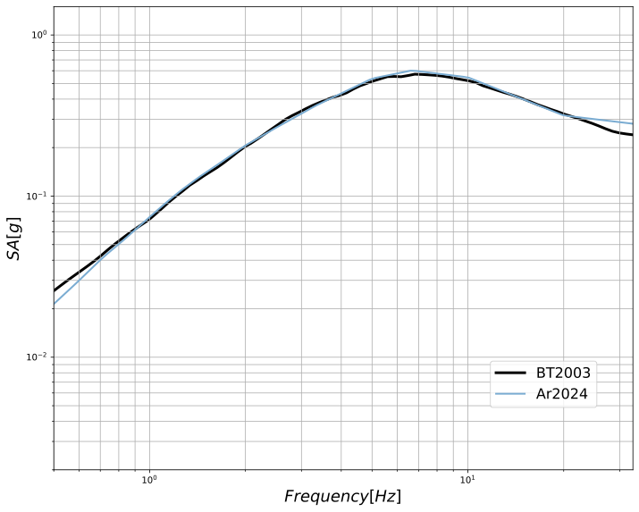
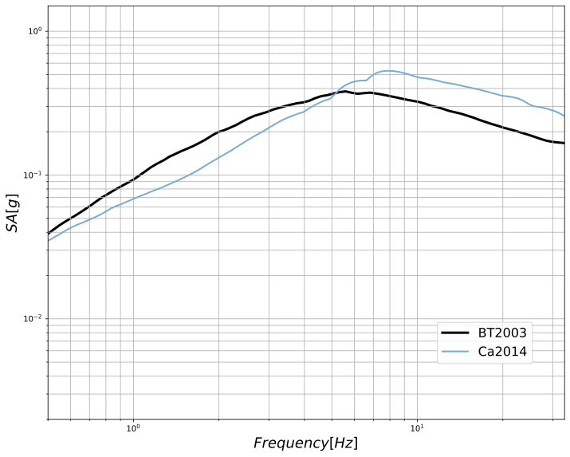

compute_targetspectra.pycompute_all_targetspectra.pyCompute GMPE target response spectra for spectral matching —
single-GMPE or multi-GMPE ensemble with mean / median / fractiles.
# Single GMPE (e.g. AbrahamsonEtAl2014) python compute_targetspectra.py configs/config_HF_SMS_Ab2014.json # All GMPEs together (mean, median, q16, q84) python compute_all_targetspectra.py configs/config_all_GMPE.json # Generate the 'all GMPEs' config first python generate_configs.py --all
.tgt file is required by both download_seeds.py (for RotD50 comparison) and Matching_handle.py (as the matching target).
config_HF_SMS_Ab2014.json), computes the target spectrum via OpenQuake, saves the .tgt file and a PDF figure.
generate_configs.py.
config_all_GMPE.json), computes each one, then calculates the mean, median, q16, q84 across the ensemble.
config_all_GMPE.json (generated via generate_configs.py --all).
~/openquake/bin/python if needed (no manual source activate required).SCENARIO block: event magnitude, depth, epicentral distance, Vs30, rake, dip, and the list of GMPE names..tgt file — writes the target spectrum in RSPMatch format (3 header lines, then frequency / dummy / dummy / SA per line). SA is in m/s².For compute_all_targetspectra.py, step 4 additionally computes the ensemble mean, median, 16th and 84th percentiles across all GMPEs, and saves a separate target{event}_MEAN.tgt.
Step-by-step logic of compute_targetspectra.py and compute_all_targetspectra.py at runtime:
sys.executable against ~/openquake/bin/python.os.execv() to restart the script using ~/openquake/bin/python with the same arguments. This ensures all OpenQuake GSIM libraries are available.SCENARIO block containing event parameters (magnitude, depth, epicentral distance, Vs30, rake, dip) and the list of GMPE names.SitesContext, RuptureContext, DistancesContext with the scenario parameters (Vs30, magnitude, rake, dip, depths, distances).magBT / depthBT scenario parameters.SND = 1.5 × BT2003 — a simplified adjustment.GMPElist.openquake.hazardlib.gsim.get_available_gsims(), then call get_mean_and_stddevs() with the site/rupture/distances contexts at each frequency.For compute_all_targetspectra.py, additionally computes the mean, median, 16th and 84th percentiles across the GMPE ensemble at each frequency.
Input_{event}_{code}/ per GMPE (e.g. Input_HF_SMS_Ab2014/).freq 0 1000 SA where SA is in m/s².Input_{event}_MEAN/target_{event}_MEAN.tgt with the ensemble mean spectrum.Figures/Alea_{events}events.pdf.| File / Directory | Content |
|---|---|
Input_{event}_{code}/target_{event}_{code}.tgt |
Target spectrum file in RSPMatch format. One directory per GMPE. |
Input_{event}_MEAN/target_{event}_MEAN.tgt |
(all_targetspectra only) Mean spectrum across the GMPE ensemble. |
Alea_{events}events.pdf |
PDF figure with all GMPE curves, coloured by event. |
Figures/Alea_HF_SMS_LF_SMSevents.pdfFigures/Alea_HF_SMSevents.pdfFigures/Alea_LF_SMSevents.pdf
Generated by compute_targetspectra.py / compute_all_targetspectra.py.
Saved under Figures/ in the project root.
Concrete examples from Figures/ — log-log plots comparing all selected GMPE spectra:

HF_SMS event (Mw 5.6, depth 7 km)

LF_SMS event (Mw 6.4, depth 15 km)
Each curve represents one GMPE's spectral acceleration prediction. The multi-GMPE ensemble plot additionally shows mean (crimson), q16/q84 fractiles (dashed), and the BT2003 reference (black). Click to enlarge.
Input_HF_SMS_Ab2014/target_HF_SMS_Ab2014.tgt from compute_targetspectra.py config_HF_SMS_Ab2014.json Input_HF_SMS_MEAN/target_HF_SMS_MEAN.tgt from compute_all_targetspectra.py config_all_GMPE.json Input_LF_SMS_Ca2014/target_LF_SMS_Ca2014.tgt per-GMPE target
target_HF_SMS_Ab2014.tgt header: filename 100 1 npts, flag 0.050000 damping ratio (5%) 0.500000 0 1000 0.123456e-01 freq(Hz) _ _ SA(m/s²) 0.525347 0 1000 0.134567e-01 ...
The file has 3 header lines followed by one line per frequency. Column 1 = frequency (Hz), column 4 = spectral acceleration (m/s²).
| Parameter | HF_SMS | LF_SMS | Source |
|---|---|---|---|
| Magnitude (Mw) | 5.7 | 6.6 | mag / magBT |
| Depth | 16 km | 14 km | depth / depthRP3 |
| Epicentral dist. | 0 km | 12 km | Epi |
| Vs30 | 980 m/s | 980 m/s | rock site |
| Rake | 0° (SS) | 0° (SS) | strike-slip |
| Dip | 90° | 90° | vertical |
| Rx / Ry0 | −1 / 0 | −1 / 0 | not used |
| Code | Full Name |
|---|---|
| Ca2014FV | Cauzzi et al. 2014 (Fixed Vs30) |
| CY2014 | Chiou & Youngs 2014 |
| RE2019M | Rietbrock & Edwards 2019 Mean |
| Am2017Rjb | Ameri et al. 2017 (RJB) |
| Bo2014 | Boore et al. 2014 |
| Ko2020ESHM20 | Kotha et al. 2020 (ESHM20) |
| Ab2014 | Abrahamson et al. 2014 |
| CB2014 | Campbell & Bozorgnia 2014 |
| Bi2014Rhyp | Bindi et al. 2014 (Rhyp) |
| Ak2014 | Akkar et al. 2014 (Rhyp) |
| La2019RupOmo | Lanzano et al. 2019 (Rrup, Omo) |
| Bi2017Rhypo | Bindi et al. 2017 (Rhypo) |
| YA2015BSSSA | Yenier & Atkinson 2015 (BSSA) |
| To2002SHARE | Toro et al. 2002 (SHARE) |
| Ca2003SHARE | Campbell 2003 (SHARE) |
Both scripts automatically switch to the OpenQuake Python environment if needed:
# At the top of each script:
if sys.executable != "~/openquake/bin/python":
try:
import openquake
except ImportError:
os.execv("~/openquake/bin/python", [...] + sys.argv)
No manual source activate needed. Simply run with your system Python and it self-restarts in the correct environment.
~/openquake/ must have openquake.engine, scipy, numpy, matplotlib installed.
# 1. Generate configs (one per GMPE + one 'all') python generate_configs.py --all # 2. Compute single-GMPE target (for one config) python compute_targetspectra.py configs/config_HF_SMS_Ab2014.json # 3. Or compute all-GMPE ensemble python compute_all_targetspectra.py configs/config_all_GMPE.json # 4. Verify output ls Input_HF_SMS_Ab2014/target_HF_SMS_Ab2014.tgt ls Input_HF_SMS_MEAN/